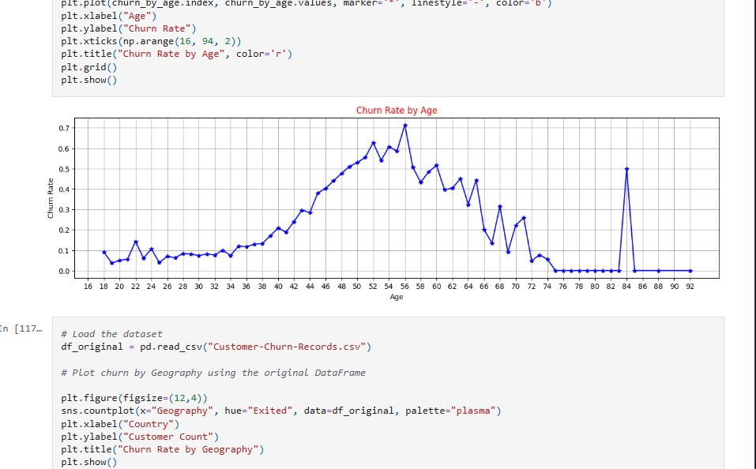
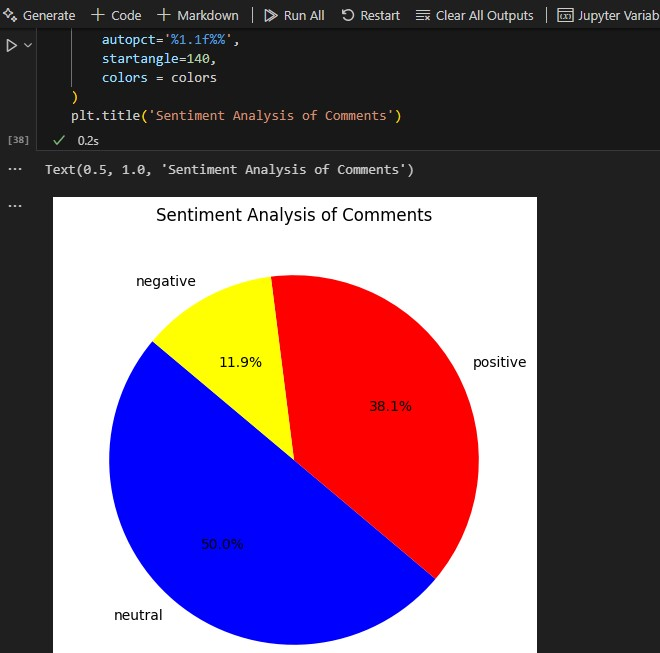
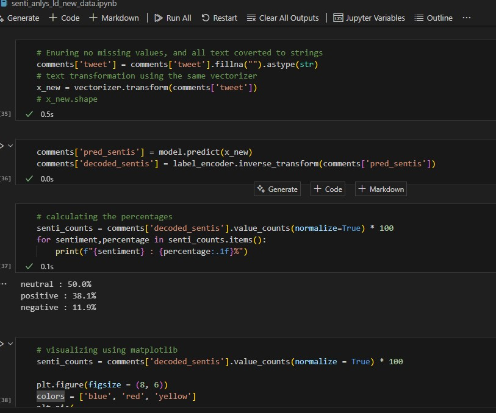
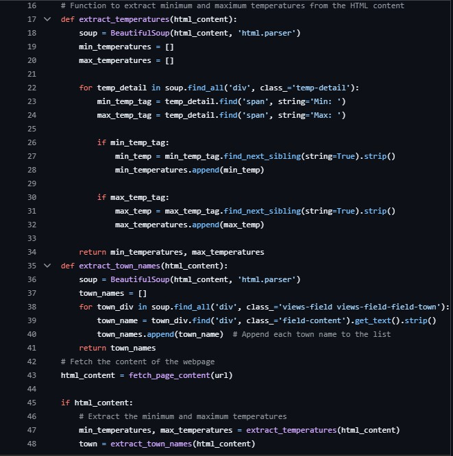
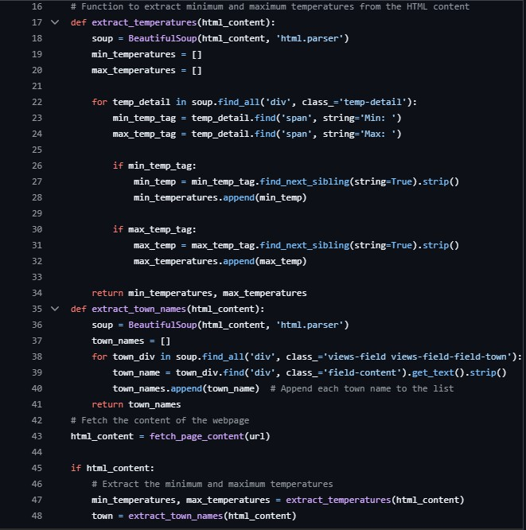
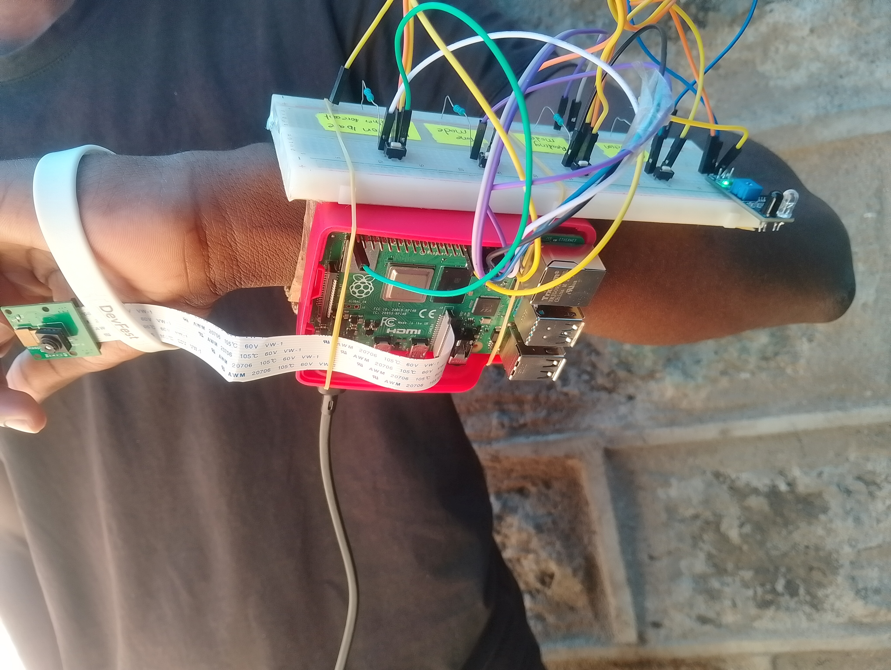
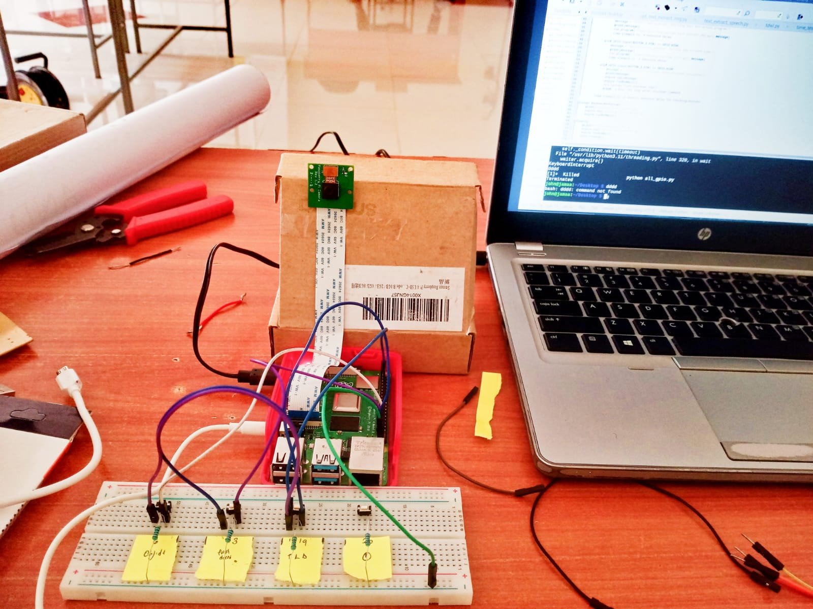
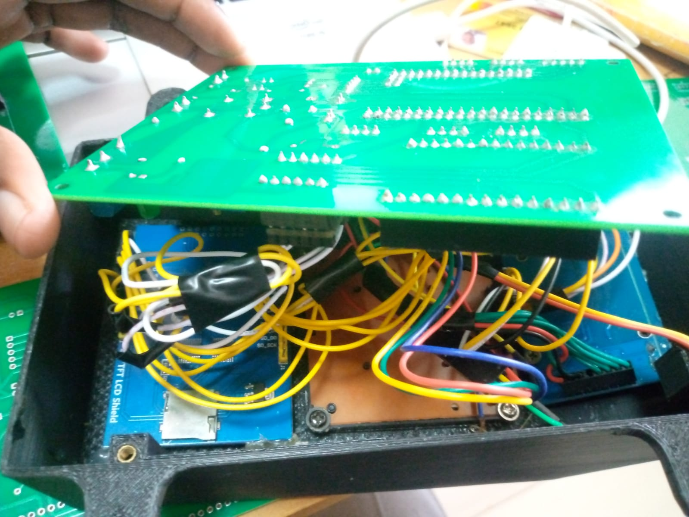
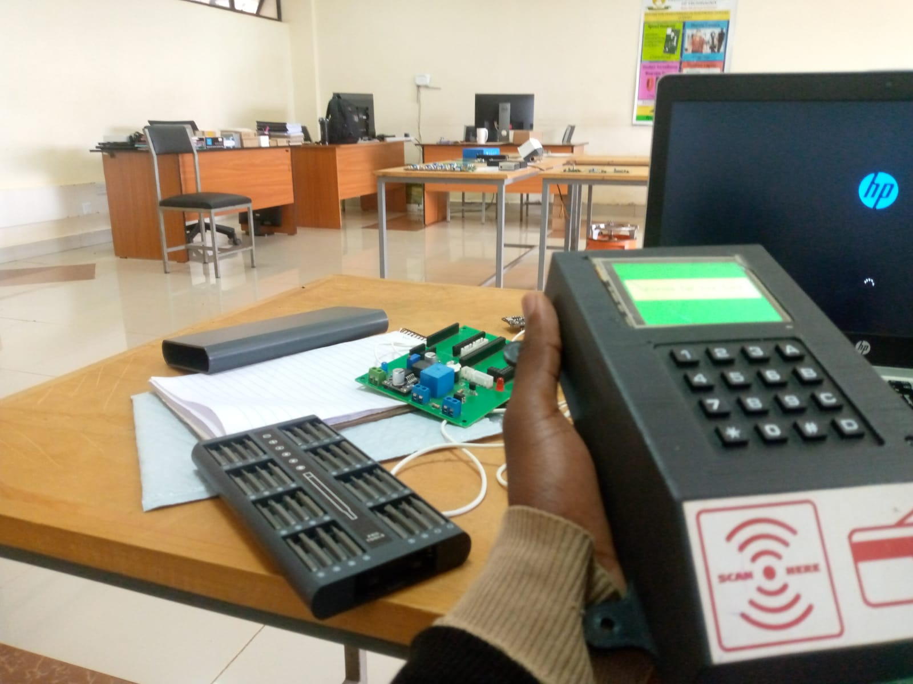

About Me
I'm a dedicated Data Sciece Enthuthiast and an Electrical Engineering Undergraduate.
My goal is to leverage my skills in data science and electrical engineering to contribute to impactful projects. I am always eager to learn and explore new technologies.
Skills
Data Science and Data Analytics
- Python programming language: Data Analytics, Web scraping, Machine Learning
- Power BI: Interactive Dashboards and Visualizations, Data modelling, DAX,Power Query , Reporting
- Predictive Modeling
- Machine Learning for Data Analytics (NLP(sentiment), churn prediction, recommendation systems, etc.)
- SQL: Data Analysis, ETL, reporting,Business intelligence,Data Cleaning
Electrical and Electronics
- Python, C, C++
- Machine Learning for Computer Vision
- MATLAB, PowerWorld for Power Systems and Signal Analysis
- Embedded Systems, PCB Design (KiCad)
Projects
Customer Churn Prediction
Developed a predictive analytics model to analyze customer retention patterns.
Banking Service Dashoard- POWER BI
Created an interactive Dashboard for customers management for a banking system

Sales Forecasting with ML
Trained regression and time-series models to forecast sales trends.
Using Machine Learning, we can transform raw sales data into accurate forecasts that drive growth and efficiency. My approach included:
- ARIMA for time series analysis
- XGBoost for boosting accuracy
- LSTM to capture complex patterns
Key Insights
- Identified seasonal trends in vehicle sales
- Predicted revenue fluctuations with high accuracy
- Helped optimize inventory and pricing strategies
Data isn’t just numbers—it tells a story! It reveals market trends, customer behaviors, and future opportunities, enabling companies to stay ahead of the competition.

HR insights Dashboard
Built dashboards for HR insights and customer management for banking services. Applied advanced data modeling and visualization techniques to enhance data interpretation and decision-making.

Customer Segmentation
Applied clustering techniques to segment customers based on purchasing behavior.
Are businesses truly maximizing their customer relationships, or are they guessing in the dark? Not all customers are the same—some are high-value, some are at risk of churning, and others need a nudge to engage more. Instead of using a one-size-fits-all approach, businesses can leverage customer segmentation to tailor their strategies and maximize impact. I explored segmentation techniques to uncover hidden patterns in customer behavior. The goal? To help businesses understand their audience better and make data-driven marketing decisions. By applying:
- K-Means Clustering, we identified distinct customer groups based on purchasing habits and engagement levels.
- Hierarchical Clustering provided deeper insights into how customers naturally group together.
- PCA (Principal Component Analysis) helped simplify complex data while retaining critical information.
NLP - Sentiment Analysis
Trained a Natural Language Processing model for analyzing customers feelings and emotions on a product/service.
In the era of Big Data, understanding how people feel about services, products, or experiences is more critical than ever. Sentiment Analysis, a powerful application of Natural Language Processing (NLP), enables us to extract insights from textual data by classifying it into positive, negative, or neutral sentiments. In my recent project , I implemented a sentiment analysis model to evaluate and classify textual responses using supervised Machine Learning. This approach helps organizations analyze customer feedback, product reviews, and social media conversations with precision. The value of such a tool lies in its ability to drive strategic decisions, improve customer experience, and monitor brand perception in real time.
 Web Scrapping and Power bi dasboard for weather forecast
Developed a Python-based web scraper to extract daily weather data from the Meteorological Department website. Created interactive Power BI dashboards to visualize trends across various towns.Provided actionable insights for regional weather monitoring.
 

Blind Copilot
Developed an AI-driven wearable device for the visually impaired that provides real-time environmental awareness.
 Power System Simulation
Analyzed and simulated electrical power networks using MATLAB and PowerWorld.

RFID-Based Device
Designed and implemented an RFID-based access control system using Proteus and Kicad.
 Research Papers
VAR Regulation
Importance of Adding Shunt Capacitors in a High Voltage Transmission System..
Paper Title 2
Top Security Door Access and Clocking system.
Contact
0750299157